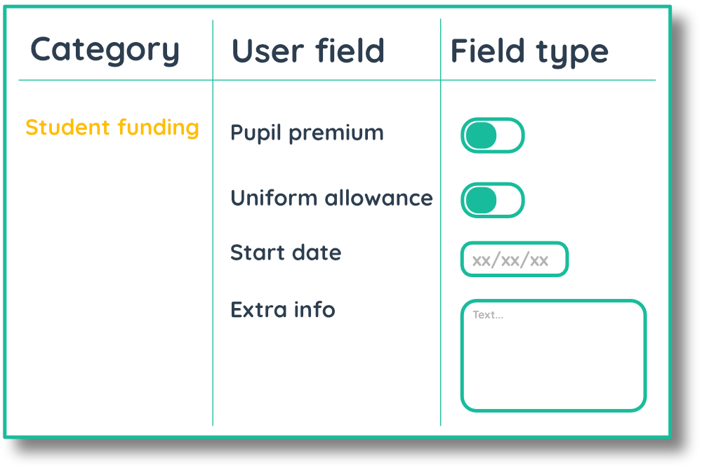

The  blog
blog
User fields
Last updated | 30th October 2018
[ADMIN]
User fields allow you to store extra details about your users, like SEN provisions, EAL flags, month of birth and much more! You can use this information to filter your data in the Vizi dashboards and understand how different cohorts are performing. You can also view tags for user fields in the markbook, the student homepage and the seating plan to immediately get extra context about a user.
User fields are organised in to 'user field categories' and within these categories you store the 'user fields'. Each user field can store text, dates, numbers or yes/no data.
If you integrate with your MIS, you can automatically pull through user fields to Vizi. Upon intgeration, Vizi will create user field categories and user fields and populate these with student details stored in your MIS.

Creating user field category
ADMIN OPTIONS [User settings] > [User fields] > 'Create'To begin with, you must create a user field catogory. Click 'User fields' in the side bar, click 'Create' above the data table and enter the name of the category you would like to create.
As you create more user field categories, you will build up your data table with categories. You can see how many user fields you have recorded in a user field category.
Adding fields to a category
ADMIN OPTIONS [User settings] > [User fields] > 'Edit' > 'Add field'Once you have created a user field category, you can begin to add fields to that category. These fields will appear when editing a user, allowing you to enter extra information about a user.
Editing user fields
ADMIN OPTIONS [User settings] > [User fields] > 'Edit' > 'Add field'
Creating and editing a user fields allows you to specify what type of information you would like to record about your students. Once you have entered the name of the user field, select the type of data you would like to record.
By selecting Boolean (yes/no), Vizi gives you the option to create a flag for the user field. This flag will appear on a student's profile and in the markbook when the user field is selected for the student. You can select whether you would like to record text or an icon and choose the foreground and background colour for the flag.
Adding user fields to users
ADMIN OPTIONS [User settings] > [Users] > 'Edit'Once you have created your user fields you can begin to add details to your students. Click on the users option in the sidebar and search for users in the users table. Select the user you would like to add information for and click the edit button.
Once you have created your user fields, you can enter information in to the input boxes and check-boxes for the user.
Viewing user fields
Once you have recorded information in user fields for your users, you can view that information in several places. To get an overview of the information you have recorded, go to a user's homepage by clicking on that user or searching for them in the search bar.
If you have created a flag for a user field and checked the box for a student, that flag will appear next to the student in the markbook.
You can also add charts for userfields to the Vizi dashboards. By adding a chart for a userfield you can see the performance and progress of different cohorts of students and filter using that user field.
You can search for a user field in the search box. This will give you an overview of the user field or user field category.
If you have created a flag for a user field, the flag will appear next to the student in the markbook and in the seating plan.